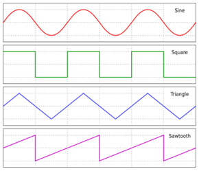

Sound is made up of waves. All sound waves have a pitch and a timbre. Pitch refers to the frequency of the wave - that is how many times per second the peak of the wave passes a given point. Timbre is how humans perceive the sound (the identity), for example, a wave can sound smooth, sharp or robotic and this timbre is determined by how the wave is shaped (the waveform). Notes are merely certain frequencies of waves, for example the middle C is 261.63Hz and the next octave would be double that (523.26Hz). Synthesisers are instruments that can be used to dynamically create and modify sounds. They utilise audio signal representations of sound. These representations are device dependant, but for analogue devices they are usually alternating currents and for digital devices they are abstract data types like graphs. A composer then takes one or multiple initial waveforms with defined frequencies and uses components in the synthesiser to tweak the sounds pitch, timbre and other characteristics to add layers of complexity. The outputs can then be further layered or added to a song. Oftentimes, keyboards are included with synthesiser. This way, the musician has a direct way to experiment with the sounds they are creating, as well as the ability to layered sounds, through chords or dyads.
Synthesisers all have a number of essential components required for the generation, manipulation and outputting of sound: Oscillators These devices produce the initial waveform at the user defined frequency that can then be modified by other components in the synthesiser to produce complex sounds. The waveform is what the wave looks like, and it determines the timbre/identity of the sound. For analogue devices, a control voltage is used by the oscillator to represent the frequency, and usually, you would need a different oscillator to get a different waveform [3]. For digital systems, the oscillator would simply define the waveform and frequency data structure. The four most commonly used waveforms are described in Figure 1 and visualised in Figure 2.
